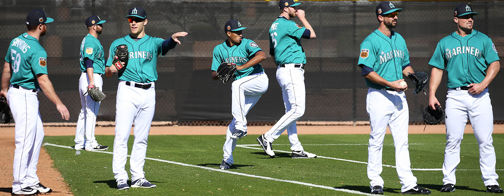

Ken Lambert / The Seattle Times
The Seattle Mariners pitching staff gather during the second day of spring training, Wednesday, Feb. 15, 2017, in Peoria, Ariz. At center, throwing, is closer Edwin Diaz.
The 'slam dunk of baseball'
How the 100-mph fastball transcends the game